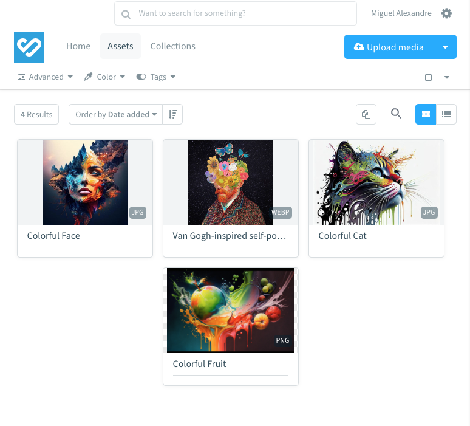
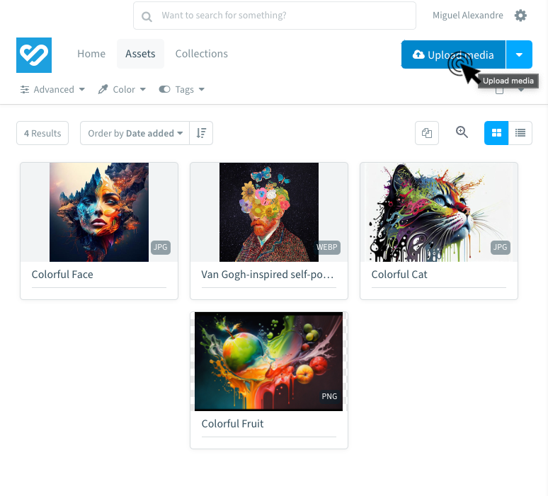
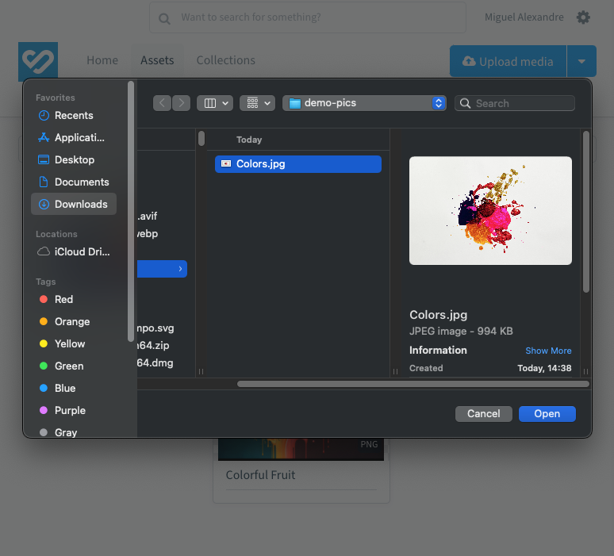
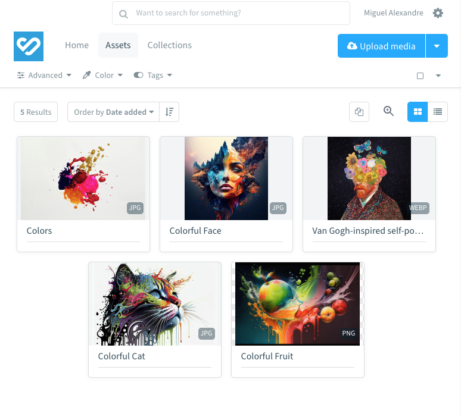
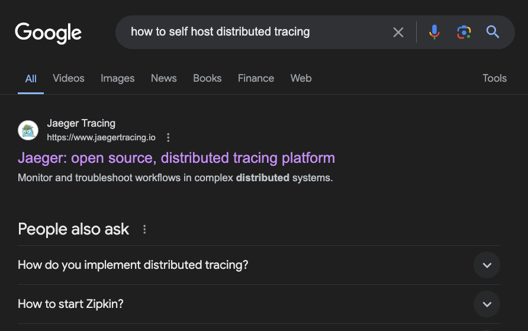
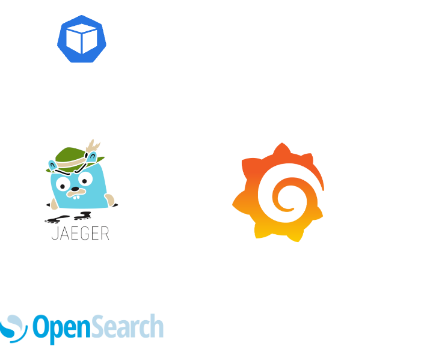

Finding the Needle in the Haystack
How we implemented Tempo to improve Bynder's system observability
Use the keyboard spacebar to move between slides.Press '?' for all keyboard hotkeys.

 Symbianx
SymbianxBefore we get into the cool stuff
Let's quickly talk about
Bynder
Bynder
Bynder
Bynder
Bynder
Easy, right?
Not quite.
Behind the beautiful UI
Behind the beautiful UI
When you upload a digital asset:
- Most of the critical path is asynchronous
- Lots of background processes get started
- A 200 OK is not always a show of success
So, how do we find the needle in the haystack?
We can use a metal detector
Luckily, we had one
Luckily, we had one
- Super High Tech Relic
- Full of features
Luckily, we had one
- Super High Tech Relic
- Full of features
- Engineers were not using it
Our very expensive APM solution was not being used
we were not very happy with that
So we set out to change it
We asked ourselves a few questions...
#1 What do Engineers think about the APM tool?
#1 What do Engineers think about the APM tool?
- Easy to set-up, install the lib and it's good to go
- Metrics and logging data is not there
- The library was not installed in all services
- It's not user-friendly (too cluttered)
- Too expensive
#2 Can we write an APM tool in-house?
Maybe.
But should we?
No.
#3 Ok, so what can we do?
- Metrics and Dashboards
- Centralized Logging
- Error Tracking
- Distributed Tracing
#4 Can we deploy a Distributed Tracing platform?
Yes!
Our Distributed Tracing Goals
Provide a step by step overview of a request as it flows through our systems
Provide a step by step overview of a request as it flows through our systems
Provide a step by step overview of a request as it flows through our systems
Ok, we know what we want. How do we do it?
Ok, we know what we want. How do we do it?
Ok, we know what we want. How do we do it?
Ok, we know what we want. How do we do it?
- Very easy to maintain
- Open Source
- Very expensive
- At some point it would require sampling

Tempo is a distributed tracing backend:
- Open Source
- Object storage based
- Built to sample 100% of requests
$ helm install tempo
Project Complete.
Just Kidding
Our Tempo approach?
- Sample 100% of requests
- Single tenant configuration
- Deployed in Microservices Mode
- Using AWS Lambda for searching
- Managed with Terraform
How do we use Tempo?
- Ingesting the data
- Generating useful metrics
- Reading the data
Ingesting the data

Ingesting the data
- Tempo distributor picks up trace data from kafka
- The distributor spreads the data between the ingesters
- Ingesters keep hot data in disk and write cold data to the bucket
Generating useful metrics

Generating useful metrics
- Tempo distributor picks up trace data from kafka
- Metrics Generator computes metrics from the traces
- Span Metrics (RED Metrics)
- Service Graph (Service Relationship metrics)
- Ships metrics to our Thanos metrics system
Accessing the data

Accessing the data
- Grafana Queries the Tempo Query Frontend for a trace
- Query Frontend shards the queries between the Queriers
- Querier performs one of:
- Lookup trace by ID in the bucket
- Delegate search to Lambda
Ok, we have the platform, what's the magic sauce for data?
Open-Source framework for collecting telemetry data:
- Vendor agnostic
- Fully open source.
- Exports logging, tracing and metrics signals.
- Supports most backends, like prometheus and tempo.
- Automatic instrumentation for most popular frameworks
Automatic Instrumentation?
The process of automatically injecting code to the application to track what calls are being made.
Really cool but we still need to install the SDK in 200+ services
How we simplified the adoption of OpenTelemetry
Focus on reducing development time spent on this
How we simplified the adoption of OpenTelemetry
Focus on reducing development time spent on this
apiVersion: v1
kind: Pod
metadata:
name: amazing-svc-7ccdd867db-cwsxt
namespace: amazing
spec:
containers:
- env:
- name: OTEL_TRACES_EXPORTER
value: otlp
- name: OTEL_SERVICE_NAME
value: amazing-svc
- name: OTEL_EXPORTER_OTLP_TRACES_ENDPOINT
value: http://otel-collector.distributed-tracing-shipping:4317
- We inject env variables to configure OpenTelemetry
- Wrote "2 step documentation" for all languages
- Setup Backstage to track adoption of the SDK
In the end, all a developer has to do is...
# Install dependencies
pipenv install "opentelemetry-distro[otlp]"
# Auto detect and install instrumentation
pipenv run opentelemetry-bootstrap | xargs pipenv install
# Run application
opentelemetry-instrument pipenv run python app.py
... and magically spans will be pushed to the Opentelemetry collector
Opentelemetry Collector?
A highly extensible vendor agnostic gateway between your applications and observability backends.
Opentelemetry Collector?
A highly extensible vendor agnostic gateway between your applications and observability backends.

- Receives all observability signals
- Processes the signals in a unified manner. e.g.:
- Adding attributes
- Redacting attributes
- Exports the signals to the backends
Now that we have the data, how do we use it?
#1 Debugging requests with Correlation IDs
- Every request is assigned a unique correlation id
- Traces/Logs/Errors contain the correlation id
- We have "Logs Finder" that finds the IDs in Tempo
#2 Standard APM Dashboards
- Combining trace metrics + infra metrics
- Language agnostic
- Including Service to service/database metrics
- Exemplars allow us to jump from dashboards to traces
Ok, I've been talking for too long
Let's see how it all ties in together
Let's see how it all ties in together

Let's see how it all ties in together
- Ingesting 6TB of raw data per day:
- 7.000+ traces p/ second
- 50.000+ spans p/ second
- Coming from:
- 14 clusters
- 400+ nodes
- At 1/5 of the cost of our previous provider
What did we learn from this?
What did we learn from this?
- Sometimes all you need is a simple metal detector
- Start small, work your way up
- Tempo scales really well, but:
- It does add some operational burden
- Takes a bit to learn all the little settings